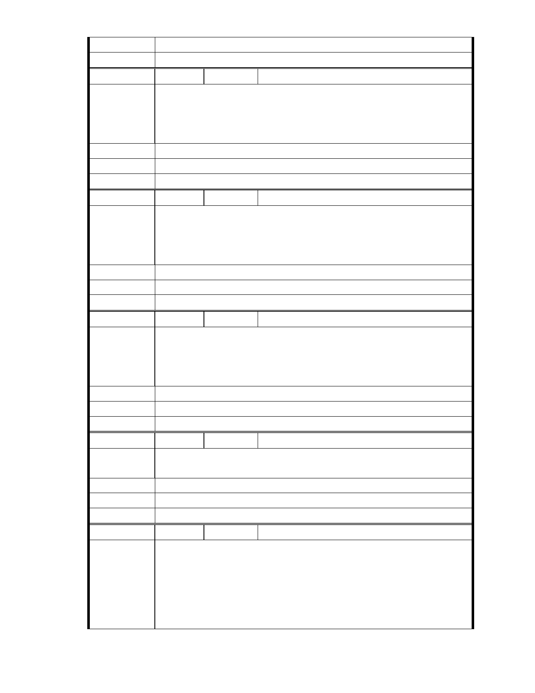

況、規劃方案及環境助益作為等方面加強溝通。
委 員 會 決 議 同編號 1。
編
號 166
陳情人 MA201212060120、陳勳賢
郝市長:
最近在網路上又看到此開發案的爭議，後來去慈濟仔細了解整個開發案
陳 情 理 由 的說明，整體規劃具美化又環保也可以改善現有破舊的外貌，個人很支
持此案。
建議辦法
市 府 說 明 相關陳情意見將納入本案審查人民意見，依法定程序辦理。
委 員 會 決 議 同編號 1。
編
號 167
陳情人 MA201212060132
請盡速通過慈濟內湖園區開發案將為台北市帶來更多慈散善遠景因慈濟
位社會所做種種慈善工作有目更賭台灣無以為寶已善與愛為寶這些都因
陳 情 理 由 慈濟幾十年來的付出帶動社會善的循環在此懇請市長及市府長官們能盡
速通過
建議辦法
市 府 說 明 相關陳情意見將納入本案審查人民意見，依法定程序辦理。
委 員 會 決 議 同編號 1。
編
號 168
陳情人 MA201212060171
我是內湖居民,慈濟的內湖園區改善案這麼棒，那些反對人士真是莫名其
妙,希望郝市長拿出魄力來，那些少數為反對而反對的人聲音特別大,不要
陳 情 理 由 屈服於那些人, 慈濟內湖園區若蓋好將是內湖居民的福氣，請郝市長要堅
持做對的事.
建議辦法
市 府 說 明 相關陳情意見將納入本案審查人民意見，依法定程序辦理。
委 員 會 決 議 同編號 1。
編
號 169
陳情人 謝連吉、MA201212070043
小民居住內湖路五段康寧醫院前面的富邦社區,離慈濟約 10 分鐘腳程,感
陳 情 理 由 覺慈濟對內湖的人文非常有貢獻,請多多支持慈濟在內湖.
建議辦法
市 府 說 明 相關陳情意見將納入本案審查人民意見，依法定程序辦理。
委 員 會 決 議 同編號 1。
編
號 170
陳情人 MA201212070049、莊妙卿
敬愛的郝市長:謝謝您為市民日理萬機，感恩您!辛苦了，請保重。我住內
湖 30 年，目睹慈濟在內湖做救災救難的濟世善業，讓國際人士的肯定與
競相學習慈濟的模式於各自的國家帶動並發揮救國救民的工作；反觀守
陳 情 理 由 護聯盟不知珍惜更加以顛倒是非，痛心至極!我是內湖人，殷切的虔誠希
望慈濟在內湖的規劃案早日完成，造福內湖，造福世界。
- 233 -